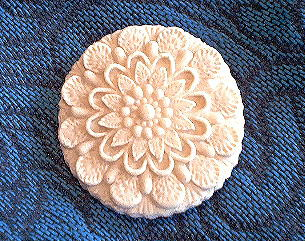
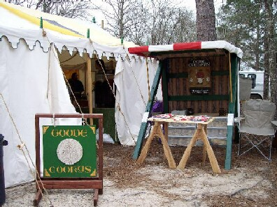

Goode Cookys are currently only for sale at
SCA
events. To see where & when we will be, visit our Facebook page at:
https://www.facebook.com/#!/pages/Goode-Cookys/10150132491435093
Thank you!

RETURN
to Gode Cookery